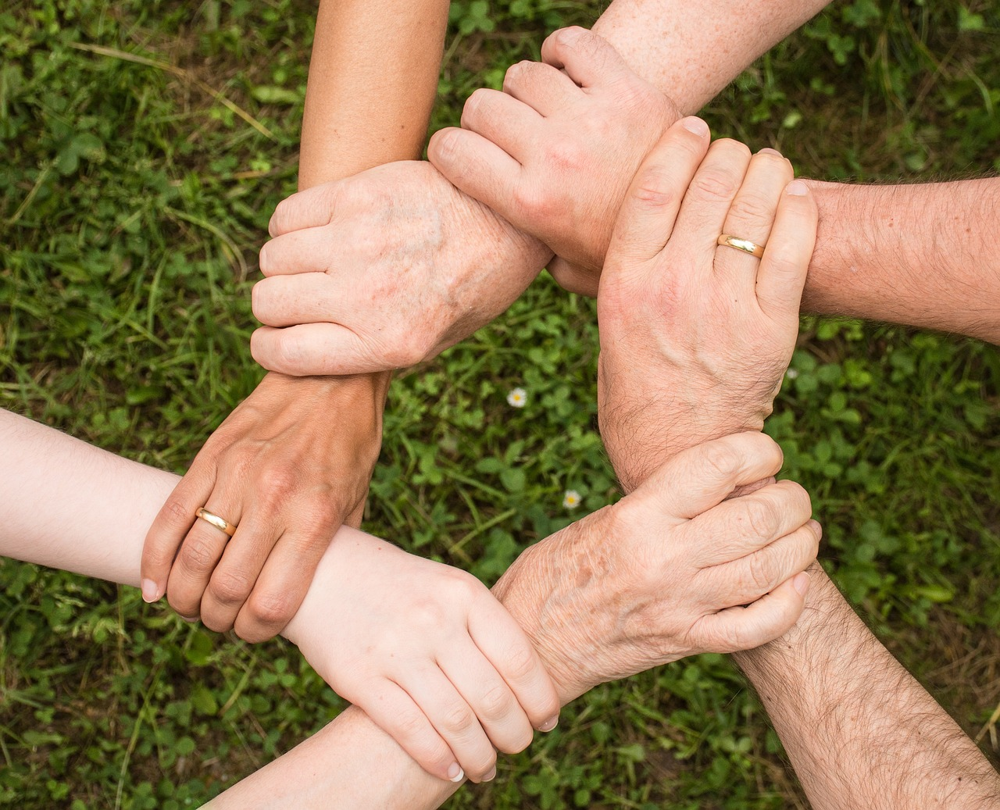
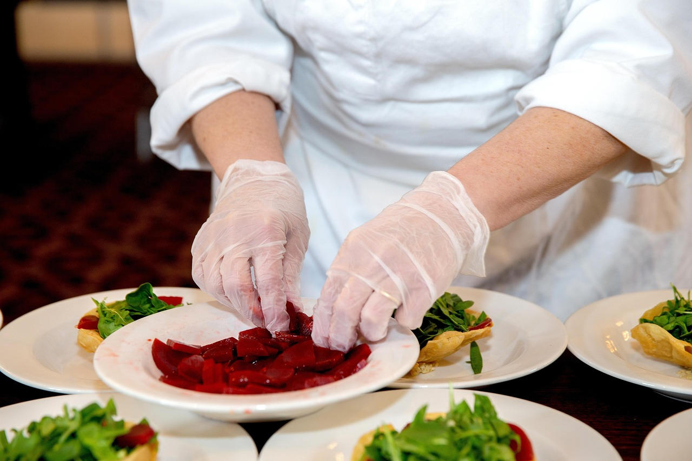

Nuestra Misión
En Foodie Diw&Co nos dedicamos a ofrecer experiencias gastronómicas únicas que combinan sabores auténticos con ingredientes frescos de la más alta calidad. Nuestra pasión es llevar a tu mesa platos que no solo alimenten el cuerpo, sino también el alma.
Creemos en la cocina como una forma de arte y expresión cultural, donde cada plato cuenta una historia y cada ingrediente tiene un propósito especial.


Lo que nos hace especiales
Nos distinguimos por nuestro compromiso con la excelencia y la innovación. Cada receta es cuidadosamente elaborada por nuestro equipo de chefs expertos que combinan técnicas tradicionales con toques modernos.
Utilizamos únicamente ingredientes locales y de temporada, apoyando a productores de la región y garantizando la frescura en cada bocado. Nuestra dedicación va más allá de la comida: creamos momentos memorables.